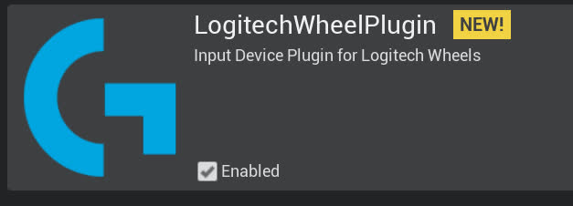

在构建的Carla 0.9.13工作空间中安装 DReyeVR
要求
- 确保您的机器满足 Carla 要求的先决条件： Windows, Linux, Mac*
- 重要：如果在 Windows 上，则 需要
Make-3.81，如 Carla 文档 所述 - 如果你之前已经在 PYTHONPATH 中安装了 Carla，则需要删除所有之前的 PythonAPI 安装
- 例如，如果您 通过 pip 安装了 carla ，则 需要将其卸载 才能继续。
pip uninstall carla
开始 Getting started
- 应该首先保证 DReyeVR 已经下载：
git clone https://github.com/HARPLab/DReyeVR --depth 1 - 首先需要从源代码安装虚 幻引擎 4.26（CARLA fork）
git clone https://github.com/CarlaUnreal/UnrealEngine # 将此位置设置为您的 $UE4_ROOT 环境变量
重要 在 DReyeVR for Carla 0.9.13 上，您需要将 UE4 存储库恢复为受支持的版本（用于 DReyeVR）。这是为了优化 DX11 渲染性能，在我们的测试中，DX11 是 VR 的最佳渲染后端。
# in $UE4_ROOT
git checkout d40ec35474e8793b4eea60dba6c4f051186e458e
# or git reset --hard d40ec35474e8793b4eea60dba6c4f051186e458e
- 重要： 如果
git clone链接对您不起作用，您可能需要 加入 Epic Games 组织 才能访问 UnrealEngine 及其所有分支。 -
为了成功运行
Setup.sh，您需要下载并替换/Engine/Build中的 Commit.gitdeps.xml 文件。请参阅 Commit.gitdeps.xml 中更新的 XML 文件（注意：该链接已经失效，可以使用 这个文件 ）
- 然后你需要克隆并构建一个 vanilla Carla 0.9.13
git clone https://github.com/carla-simulator/carla -b 0.9.13 --depth 1
git clone https://github.com/carla-simulator/scenario-runner -b v0.9.13 --depth 1
(*=Carla 不再正式支持 Mac 操作系统，但我们的开发团队已能够在搭载 Apple Silicon（arm64）硬件的新 Mac 机器上构建 UE4、Carla 和 DReyeVR。 )
DReyeVR 安装命令总结
显示用于安装和构建 DReyeVR 的命令行
mkdir CarlaDReyeVR && cd CarlaDReyeVR # 在这个 "CarlaDReyeVR" 目录中做所有事
#####################################################
########### 安装我们的 UnrealEngine fork ###########
#####################################################
# Rather than https://github.com/CarlaUnreal/UnrealEngine UE4, you SHOULD clone https://github.com/HARPLab/UnrealEngine
# 但除此之外，所有的指令都是一样的。
# Linux: https://carla.readthedocs.io/en/0.9.13/build_linux/#unreal-engine
# Windows: https://carla.readthedocs.io/en/0.9.13/build_windows/#unreal-engine
#####################################################
################### 安装 Carla ###################
#####################################################
# Linux: https://carla.readthedocs.io/en/0.9.13/build_linux/
# Windows: https://carla.readthedocs.io/en/0.9.13/build_windows/
git clone https://github.com/carla-simulator/carla -b 0.9.13 --depth 1
cd carla
./Update.sh # linux/mac
Update.bat # Windows（已经失效，需要克隆然后切换到tag 为0.9.13的提交记录）
git clone https://bitbucket.org/carla-simulator/carla-content.git
make PythonAPI && make launch # 构建最初的 Carla
#####################################################
############## 安装 DReyeVR 插件 ##############
#####################################################
# (可选) 安装 SRanipal (眼动跟踪) SRanipal plugin
mv /PATH/TO/SRANIPALPLUGIN/SDK/03_Unreal/Plugins/SRanipal Unreal/CarlaUE4/Plugins/
# (可选) 安装 LogitechWheelPlugin (steering wheel)
git clone https://github.com/HARPLab/LogitechWheelPlugin
mv LogitechWheelPlugin/LogitechWheelPlugin Unreal/CarlaUE4/Plugins/ # install to carla
cd .. # 回到主目录
#####################################################
############## 安装 scenario_runner #################
#####################################################
# (可选) while you don't NEED scenario runner, it is certainly useful from a research
git clone https://github.com/carla-simulator/scenario_runner -b v0.9.13
#####################################################
################## 安装 DReyeVR ##################
#####################################################
git clone https://github.com/HARPLab/DReyeVR
cd DReyeVR
# CARLA= 和 SR= 变量是可选的
make install CARLA=../carla SR=../scenario_runner
# 或者（最重要）
make install CARLA=../carla
make install SR=../scenario_runner
# run filesystem checks after installing
make check CARLA=../carla
cd ..
#####################################################
################## 构建所有 #########################
#####################################################
cd carla
make PythonAPI # build the PythonAPI (and LibCarla) again
make launch # launch in editor
make package # create an optimized package
make check # run Carla unit tests
简单安装
从技术上讲，上述先决条件就是您安装 DReyeVR 并获得没有眼动追踪和赛车方向盘集成的准系统 VR ego-vehicle 所需的全部条件。如果这适合您的需求，只需跳到本文档的 安装 DReyeVR Core 部分，并在以下位置设置以下变量：Unreal/CarlaUE4/Source/CarlaUE4/CarlaUE4.Build.cs 成 false：
/////////////////////////////////////////////////////////////
// 编辑这些变量以启用/禁用 DReyeVR 的功能
bool UseSRanipalPlugin = true;
bool UseLogitechPlugin = true;
...
/////////////////////////////////////////////////////////////
UseSRanipalPlugin 时才需要安装 SRanipal 插件，同样，仅当启用了 UseLogitechPlugin 时才需要安装 Logitech 插件。
注意
在虚幻编辑器中运行时，需要点击工具栏中的 控制 （显示弹出）才有进入驾驶模式。每次点击控制都会调用 carla\unreal\carlaue4\Source\CarlaUE4\DReyeVR\DReyeVRPawn.cpp 文件中 void ADReyeVRPawn::SetupPlayerInputComponent(UInputComponent *PlayerInputComponent) 的 Super::SetupPlayerInputComponent(PlayerInputComponent);，每次持有棋子时都会调用一次，从而 InputComponent 不为空。
安装 DReyeVR 插件
在安装 DReyeVR 之前，我们还需要安装依赖项：
- SteamVR: VR 所必需
- SRanipal*: 眼动追踪必需（使用 HTC Vive Pro Eye），其他情况可选
- LogitechWheelPlugin*: 罗技方向盘必需，其他可选
(* = 可选，取决于您正在寻找的功能)
SteamVR
下载 Steam 和 SteamVR
-
您需要使用 SteamVR 作为 VR 渲染环境，因此您应该首先下载 Steam 客户端应用程序 。
- 在 Steam 客户端中，您可以在商店中浏览->搜索 "SteamVR" 并下载免费安装的系统实用程序。
- 您应该能够从客户端启动 SteamVR，并在小弹出窗口中访问设置并"show VR view"
- 确保根据您的设置和偏好校准 VR 系统！
- 此外，我们建议在 SteamVR 设置中禁用“运动平滑”效果，以避免渲染过程中出现令人讨厌的失真伪影。
{kind=link}
HTC 眼动追踪插件
下载 SRanipal
- 什么是 SRanipal?
- 我们使用 HTC 的 SRanipal 插件 作为虚幻引擎 4 和 Vive 的眼动仪之间通信的手段。
- 要了解有关 SRanipal 的更多信息以及首次设置，请参阅 HTC 开发人员 MariosBikos_HTC 撰写的 使用 SRanipal 进行注视点渲染的指南
- 您需要一个（免费创建）Vive 开发者帐户 才能下载以下内容：
- a)
VIVE_SRanipalInstaller_1.3.2.0.msi-- 安装 Tobii 固件的可执行文件 - b)
SDK_v1.3.3.0.zip-- 包含 Unreal 插件- 重要: 1.3.6.0 以上的 SRanipal 版本不受支持并会导致严重崩溃！
- 如果上面的下载链接对您不起作用，请确保您拥有 Vive 开发者帐户！（或直接 联系 我们以帮助您）
- a)
- 双击
.msi安装程序安装 Tobii 固件- 安装完成后，您应该会在“开始”菜单中看到
SR_runtime.exe程序。以管理员身份启动它，您应该会在 Windows 系统托盘中看到机器人头部图标，如下所示： 
- 图片来源：MariosBikos
- 安装完成后，您应该会在“开始”菜单中看到
安装 SRanipal UE4 插件
- 下载
.zip文件后，解压后应出现类似如下的目录
SDK
- 01_C/
- 02_Unity/
- 03_Unreal/
- Eye_SRanipal_SDK_Guide.pdf
- Lip_SRanipal_SDK_Guide.pdf
- 然后，解压 SRanipal 虚幻插件并将
03_Unreal/Plugins/SRanipal/目录复制到 Carla 安装
# in SDK/
cd 03_Unreal
unzip Vive-SRanipal-Unreal-Plugin.zip # 创建 PLugins/SRanipal 目录
# 假设 CARLA_ROOT 已定义，否则只需使用您的 Carla 路径
cp -r Plugins/SRanipal $CARLA_ROOT/Unreal/CarlaUE4/Plugins/
-
建议为实验中的每个新参与者重新校准 SRanipal 眼动仪插件。您可以进入 SteamVR 主页，点击底部菜单栏中的小图标，将眼动仪校准到头戴式耳机佩戴者。
- 您可以查看 HTC 开发人员 MariosBikos_HTC 撰写的 使用 SRanipal 进行注视点渲染的指南 ，了解更多信息
罗技方向盘插件
安装罗技方向盘插件
-
这仅适用于拥有罗技方向盘/踏板驾驶装置的人。体验 VR 体验不需要此硬件（您只需使用键盘/鼠标即可），但可以大大增强沉浸感并允许进行精细的模拟控制。
-
作为参考，我们使用了这款 罗技 G923 赛车方向盘和踏板 。
-
我们将使用这个 LogitechWheelPlugin 与 UE4 交互并将硬件输入映射到动作。
-
克隆 repo 并将所需文件夹移动到 Carla 插件文件夹
git clone https://github.com/HARPLab/LogitechWheelPlugin
mv LogitechWheelPlugin/LogitechWheelPlugin $CARLA_ROOT/Unreal/CarlaUE4/Plugins
- 当您再次启动编辑器时，您应该会看到已启用的 Logitech 插件：
- 
完整性检查
- 安装这些插件后，您应该会看到如下所示的
Unreal/CarlaUE4/Plugins：
Plugins
├── Carla # 未改变
│ └── ...
├── CarlaExporter # 未改变
│ └── ...
├── LogitechWheelPlugin # 如果已安装
│ ├── Binaries
│ ├── Doc
│ ├── Logitech
│ ├── LogitechWheelPlugin.uplugin
│ ├── Resources
│ └── Source
└── SRanipal # 如果已安装
├── Binaries
├── Config
├── Content
├── Resources
├── Source
└── SRanipal.uplugin
- 如果您还有疑问或问题，请随时在我们的 问题 页面上发布问题，我们将尽力帮助您。
安装 DReyeVR 核心
-
重要 安装要求你的 shell 上有
make、python和git。 -
只需要安装到
CARLA目录即可，ScenarioRunner是可选的。 -
如果您不提供
make变量CARLA=...或SR=...，安装向导将通过查看 Carla 所需的环境变量CARLA_ROOT和SCENARIO_RUNNER_ROOT自动检测您的安装目标。
# the CARLA= and SR= variables are optional
make install CARLA=../carla SR=../scenario_runner
# or
make install CARLA=../carla
make install SR=../scenario_runner
# run filesystem checks after installing
make check CARLA=../carla
make system works, see Scripts/README.md
构建 DReyeVR PythonAPI
对 PythonAPI 使用 conda
- While not required for DReyeVR, we highly recommend compartmentalizing Python installations via isolated environments such as
anaconda- First download and install Anaconda to your machine from here.
# in /PATH/TO/CARLA/ conda create --name carla13 python=3.7.2 conda activate carla13 # will need to run this ONCE before opening a new terminal! conda install numpy
- First download and install Anaconda to your machine from here.
-
READ THIS FIRST (Linux): You might run into a problem when compiling Boost 1.72.0 (required by
LibCarla).Show instructions to get Anaconda working on Linux - ```bash # find anaconda install: which python3 ... PATH/TO/ANACONDA/envs/carla/bin/python3 # example output
# go to carla/install dir from here cd PATH/TO/ANACONDA/envs/carla/include
# create a symlink between python3.7 -> python3.7m ln -s python3.7m python3.7
`` Installboost_1_72_0.tar.gzmanually from https://github.com/jerry73204/carla/releases/tag/fix-boost and place file inBuild/boost_1_72_0.tar.gzOpenUtil/BuildTools/Setup.sh(orUtil/BuildTools/Setup.baton Windows) Find the section namedGet boostincludes and comment out thewgetlines. Now when youmake LibCarlaagain, theboost` errors should be resolved. - For more information see the bottom of this SO post -
READ THIS FIRST (Windows): Windows anaconda is a bit more of a pain to deal with.
Show instructions to get Anaconda working on Windows - Enable your environment
conda activate carla13 - Add carla to "path" to locate the PythonAPI and ScenarioRunner. But since Anaconda does not use the traditional
PYTHONPATHyou'll need to:- 3.1. Create a file
carla.pthin\PATH\TO\ANACONDA\envs\carla\Lib\site-packages\ - 3.2. Insert the following content into
carla.pth:C:\PATH\TO\CARLA\PythonAPI\carla\dist C:\PATH\TO\CARLA\PythonAPI\carla\agents C:\PATH\TO\CARLA\PythonAPI\carla C:\PATH\TO\CARLA\PythonAPI C:\PATH\TO\CARLA\PythonAPI\examples C:\PATH\TO\SCENARIO_RUNNER\
- 3.1. Create a file
- Install the specific carla wheel (
whl) to Anacondaconda activate carla13 pip install --no-deps --force-reinstall PATH\TO\CARLA\PythonAPI\carla\dist\carla-0.9.13-cp37-cp37m-win_amd64.whl # if applicable (and you installed Scenario runner) cd %SCENARIO_RUNNER_ROOT% pip install -r requirements.txt # install all SR dependencies - Finally, you might run into problems with
shapely(scenario-runner dependency) and Conda. Luckily the solution is simple:- Copy the files:
PATH\TO\ANACONDA\envs\carla13\Lib\site-packages\shapely\DLLs\geos.dllPATH\TO\ANACONDA\envs\carla13\Lib\site-packages\shapely\DLLs\geos_c.dll
- To destination:
PATH\TO\ANACONDA\envs\carla13\Library\bin\
- Copy the files:
- Now finally, you should be able to verify all PythonAPI actions work as expected via:
With all these imports passing (no error/warning messages), you're good to go!
conda activate carla13 python >>> Python 3.7.2 (default, Feb 21 2019, 17:35:59) [MSC v.1915 64 bit (AMD64)] :: Anaconda, Inc. on win32 >>> Type "help", "copyright", "credits" or "license" for more information. >>> import carla >>> from DReyeVR_utils import find_ego_vehicle >>> from scenario_runner import ScenarioRunner
- Enable your environment
Now you can finally build the PythonAPI to this isolated conda environment.
conda activate carla13
(carla13) make PythonAPI # builds LibCarla and PythonAPI to your (conda) python environment
conda activate carla13 every time you open a new terminal if you want to build DReyeVR since the shell needs to know which python environment to use. Luckily this minor inconvenience saves us from the significant headaches that arise when dealing with multiple python projects, Carla installations, and versions, etc.
Sanity Check:
It is nice to verify that the Carla PythonAPI is correctly visible in conda, to do this you should see all the following attributes in the carla module once calling dir on it.
Show instructions to verify Carla PythonAPI is installed
# in your terminal (linux) or cmd (Windows)
conda activate carla13 # (if using conda)
(carla13) python # should default to python3!!
#in Python
...
>>> import carla
>>> dir(carla)
# the following output means carla is not correctly installed :(
>>> ['__doc__', '__file__', '__loader__', '__name__', '__package__', '__path__', '__spec__']
# OR the following output means carla is installed :)
>>> ['Actor', 'ActorAttribute', 'ActorAttributeType', 'ActorBlueprint', 'ActorList', 'ActorSnapshot', 'ActorState', 'AttachmentType', 'BlueprintLibrary', 'BoundingBox', 'CityObjectLabel', 'Client', 'ClientSideSensor', 'CollisionEvent', 'Color', 'ColorConverter', 'DReyeVREvent', 'DVSEvent', 'DVSEventArray', 'DebugHelper', 'EnvironmentObject', 'FakeImage', 'FloatColor', 'GearPhysicsControl', 'GeoLocation', 'GnssMeasurement', 'IMUMeasurement', 'Image', 'Junction', 'LabelledPoint', 'Landmark', 'LandmarkOrientation', 'LandmarkType', 'LaneChange', 'LaneInvasionEvent', 'LaneInvasionSensor', 'LaneMarking', 'LaneMarkingColor', 'LaneMarkingType', 'LaneType', 'LidarDetection', 'LidarMeasurement', 'Light', 'LightGroup', 'LightManager', 'LightState', 'Location', 'Map', 'MapLayer', 'MaterialParameter', 'ObstacleDetectionEvent', 'OpendriveGenerationParameters', 'OpticalFlowImage', 'OpticalFlowPixel', 'Osm2Odr', 'Osm2OdrSettings', 'RadarDetection', 'RadarMeasurement', 'Rotation', 'SemanticLidarDetection', 'SemanticLidarMeasurement', 'Sensor', 'SensorData', 'ServerSideSensor', 'TextureColor', 'TextureFloatColor', 'Timestamp', 'TrafficLight', 'TrafficLightState', 'TrafficManager', 'TrafficSign', 'Transform', 'Vector2D', 'Vector3D', 'Vehicle', 'VehicleControl', 'VehicleDoor', 'VehicleLightState', 'VehiclePhysicsControl', 'VehicleWheelLocation', 'Walker', 'WalkerAIController', 'WalkerBoneControlIn', 'WalkerBoneControlOut', 'WalkerControl', 'Waypoint', 'WeatherParameters', 'WheelPhysicsControl', 'World', 'WorldSettings', 'WorldSnapshot', '__builtins__', '__cached__', '__doc__', '__file__', '__loader__', '__name__', '__package__', '__path__', '__spec__', 'bone_transform', 'bone_transform_out', 'command', 'libcarla', 'vector_of_bones', 'vector_of_bones_out', 'vector_of_gears', 'vector_of_ints', 'vector_of_transform', 'vector_of_vector2D', 'vector_of_wheels']
Future modifications
Additionally, if you make changes to the PythonAPI source and need to rebuild (make PythonAPI again) when using Conda you should reinstall the .whl file to ensure your changes will be reflected in the environment:
- ```bash
conda activate carla
pip install --no-deps --force-reinstall /PATH/TO/CARLA/PythonAPI/carla/dist/carla-YOUR_VERSION.whl
```
升级 DReyeVR
If you currently have an older version of DReyeVR installed and want to upgrade to a newer version, it is best to re-install DReyeVR from a fresh Carla repository. You can manually delete the carla repository and re-clone it directly (carefully ensuring the versions match) or use our provided scripts which attempt to reset the repository for you:
Show instructions to use DReyeVR scripts to reset CARLA repo
**IMPORTANT:** the `DReyeVR` clean script will overwrite and reset the Carla repository you specify, so make your backups now if you have any unstaged code. (`git reset --hard HEAD` and `git clean -fd` will be invoked, so if you commit your local changes they will be safe)# first go to CARLA and clean it so no old DReyeVR builds linger
cd /PATH/TO/Carla/
make clean
# it is a good idea to clean the Content/ directory which is not tracked by Carla's git system
rm -rf Unreal/CarlaUE4/Content/
# re-install the Content fresh from Carla's servers
./Update.sh # Linux/Mac
Update.bat # Windows
# next, go to DReyeVR and get the latest updates
cd /PATH/TO/DReyeVR/
git pull origin main # or dev, or whatever branch
# next, run the DReyeVR-cleaner to automatically hard-reset the Carla repo
# accept the prompt to hard-clean CARLA, note that this will reset tracked and remove untracked files
make clean CARLA=/PATH/TO/CARLA SR=/PATH/TO/SR # both args are optional
# now, you can cleanly install DReyeVR over Carla again
make install CARLA=/PATH/TO/CARLA SR=/PATH/TO/SR # both args are optional
# it's a good idea to check that the Carla repository has all the expected files
make check CARLA=/PATH/TO/CARLA SR=/PATH/TO/SR # both args are optional
# finally, you can go back to Carla and rebuild
cd /PATH/TO/Carla
make PythonAPI
make launch
make package
构建 DReyeVR UE4
如果您不想使用 SRanipal 或 LogitechWheelPlugin，您可以在编译时通过将 Unreal/CarlaUE4/Source/CarlaUE4/CarlaUE4.Build.cs 中的变量更改为 false 来禁用它们：
/////////////////////////////////////////////////////////////
// 编辑这些变量以启用/禁用 DReyeVR 的功能
bool UseSRanipalPlugin = true;
bool UseLogitechPlugin = true;
...
/////////////////////////////////////////////////////////////
```
最后，在任何终端（Linux / Mac）或 VS 2019 的 `Windows x64 Native Tools Command Prompt for VS 2019`（Windows）中打开项目目录并运行：
```bash
make PythonAPI # 构建 PythonAPI & LibCarla
make launch # 在编辑器中构建 development UE4 game
make package # 构建优化的 UE4 打包游戏（打包）
运行 DReyeVR
构建运输 shipping 包后，在 VR 模式下运行 Carla（安装了 DReyeVR）可执行文件：
# on Unix
cd /PATH/TO/CARLA/Dist/CARLA_Shipping_0.9.13-dirty/LinuxNoEditor/ # or MacNoEditor on MacOS
./CarlaUE4.sh -vr
# on Windows x64 Visual C++ Toolset
cd \PATH\TO\CARLA\Build\UE4Carla\0.9.13-dirty\WindowsNoEditor\
CarlaUE4.exe -vr
# Optional flag: -quality-level=Low
-quality-level=Low 运行，我们从 vanilla Carla 对其进行了修改，以保持相同的渲染距离。
注意 2 您也不一定需要在 VR 中运行 DReyeVR。如果您省略 -vr 标志，那么您将看到一款平板 Carla 游戏，该游戏具有 DReyeVR 的相同功能，只是不在 VR 中。
现在该怎么办？
现在您已成功安装 DReyeVR，请继续访问 Usage.md 了解如何将 DReyeVR 用于您自己的 VR 驾驶研究模拟器。